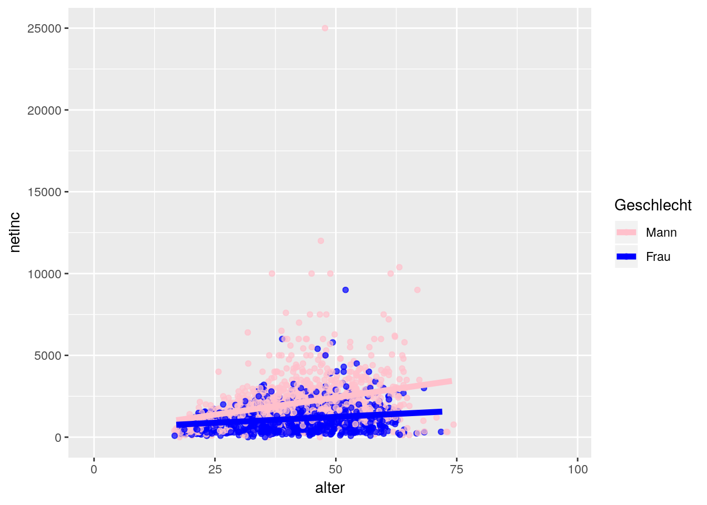

Data Viz
More about this website.
1 Load Packages
At first, we need to load some packages. If you do not have them installed them yet, please do so once.
library(ggplot2)
library(hrbrthemes)
library(extrafont)## Registering fonts with R2 Laden des Datensatzes:
Hierfür verwenden wir die Daten, die wir bereits im Datamanagement-Teil eingelesen haben.
Ein erster Überblick
str(econ_data)## 'data.frame': 5000 obs. of 8 variables:
## $ netinc : int NA NA 1000 NA NA 2430 NA NA NA 627 ...
## $ alter : num 43 15 34 62 52 30 24 14 68 44 ...
## $ sex : Factor w/ 2 levels "maennlich","weiblich": 2 2 1 2 2 1 2 1 2 2 ...
## $ contract: num NA NA 40 NA NA 40 NA NA NA 19 ...
## $ actual : num NA NA 60 NA NA 40 NA NA 40 19 ...
## $ trust : int 3 NA 3 3 3 2 2 NA 2 2 ...
## $ rely : int 2 NA 3 1 3 4 3 NA 3 2 ...
## $ inc_kat : chr NA NA "Q2" NA ...head(econ_data)## netinc alter sex contract actual trust rely inc_kat
## 2267 NA 43 weiblich NA NA 3 2 <NA>
## 5775 NA 15 weiblich NA NA NA NA <NA>
## 10439 1000 34 maennlich 40 60 3 3 Q2
## 11269 NA 62 weiblich NA NA 3 1 <NA>
## 6853 NA 52 weiblich NA NA 3 3 <NA>
## 3878 2430 30 maennlich 40 40 2 4 Q43 Einfache Scatterplots
3.1 Zusammenhang Sympathie Netincome ~ Alter
ggplot(data = econ_data, # GGplot starten und Datensatz angeben
mapping = aes(x = alter, # Specify mapping: aestethics (variable stuff)
y = netinc)) +
geom_jitter() 
3.2 Hinzufügen einer Regressionsgerade
ggplot(data = econ_data,
mapping = aes(x = alter,
y = netinc)) +
geom_jitter() +
geom_smooth(method = "lm") # lineare Regressionsgerade
3.3 Unterscheiden nach Geschlecht (farblich)
ggplot(data = econ_data,
mapping = aes(x = alter,
y = netinc,
col = sex)) + # groupieren nach Color !
geom_jitter() +
geom_smooth(method = "lm",se = FALSE) # wir schalten die Konfidenzintervalle aus 
3.4 Die Farben sind optimierbar:
ggplot(data = econ_data,
mapping = aes(x = alter,
y = netinc,
col = sex)) +
geom_jitter(alpha = 0.7) + # wir machen die Punkte ein bisschen durchsichtig
geom_smooth(size = 2,method = "lm",se = FALSE)+
scale_color_manual(values = c("maennlich" = "pink", # wir weisen den Parteien farben zu
"weiblich" = "blue"),
name = "Geschlecht",
labels = c("Mann","Frau"))
3.5 Achsenlabels
ggplot(data = econ_data,
mapping = aes(x = alter,
y = netinc,
col = sex)) +
geom_jitter(alpha = 0.7) +
geom_smooth(size = 2,method = "lm",se = FALSE)+
scale_color_manual(values = c("maennlich" = "pink",
"weiblich" = "blue"),
name = "Geschlecht",
labels = c("Mann","Frau")) +
labs(x = "Alter",
y = "Nettoeinkommen",
title = "Titel",
subtitle = "Untertitel",
caption = "whatever")
3.6 Schönes Theme
Jetzt noch ein Theme und sichern unter dem Objekt gg1
gg1 <- # zuweisen
ggplot(data = econ_data,
mapping = aes(x = alter,
y = netinc,
col = sex)) +
geom_jitter(alpha = 0.7) +
geom_smooth(size = 2,method = "lm",se = FALSE)+
scale_color_manual(values = c("maennlich" = "pink",
"weiblich" = "blue"),
name = "Geschlecht",
labels = c("Mann","Frau")) +
labs(x = "Alter",
y = "Nettoeinkommen",
title = "Titel",
subtitle = "Untertitel",
caption = "whatever")#+
theme_ipsum(grid = "Y") #Theme mit schöner Schrit und mit horizontalen Grid-Linien
gg1 #print3.7 Output zum Einbinden ins Paper
3.7.1 Entweder pdf
ggsave(filename = "results/econ_jitterplot.pdf",
plot = gg1,
device = "pdf",
width = 10,
height = 6,
dpi = 2000)3.7.2 oder png
ggsave(filename = "results/econ_jitterplot.png",
plot = gg1,
device = "png",
width = 10,
height = 6,
dpi = 2000)3.7.2.0.0.0.0.0.0.0.0.0.0.0.0.0.0.0.0.0.0.0.0.0.0.0.0.0.0.0.0.0.0.0.0.0.0.0.0.0.0.0.0.0.0.0.0.0.0.0.0.0.0.0.0.0.0.0.0.0.0.0.0.0.0.0.0.0.0.0.1
4 Barplots Einkommenskategorien
4.1 Eindimensional
table(econ_data$netinc) %>% head()##
## 0 40 81 84 87 88
## 5 1 1 1 1 24.2 Haeufigkeitsverteilung der Einkommenskategorien
ggplot(data = econ_data) +
geom_bar(aes(x = inc_kat))4.3 In Prozent
ggplot(data = econ_data) +
geom_bar(aes(x = inc_kat,
y = (..count..)/sum(..count..))) # relative haeufigkeit 4.4 Twodimensional Barplots
# Descriptive overview
round(
prop.table(
table(zweit = econ_data$inc_kat,
erst = econ_data$sex),margin = 1),2)## erst
## zweit maennlich weiblich
## Q1 0.26 0.74
## Q2 0.40 0.60
## Q3 0.67 0.33
## Q4 0.82 0.18# In plot
gg1 <- #objekt zuweisen
ggplot(data = econ_data) +
geom_bar(aes(x = inc_kat,
y = (..count..),
fill = sex))+ # relative haeufigkeit +
scale_fill_manual(values = c("maennlich" = "pink",
"weiblich" = "blue"),
name = "Geschlecht",
labels = c("Mann","Frau")) +
labs(x = "Einkommensquartil",
y = "Haeufigkeit",
title = "Titel",
subtitle = "Untertitel",
caption = "whatever") +
theme_ipsum(grid = "Y")
gg1 #print4.5 Output to pdf
ggsave(filename = "results/econ_barplot.pdf",
plot = gg1,
device = "pdf",
width = 10,
height = 6,
dpi = 1000)